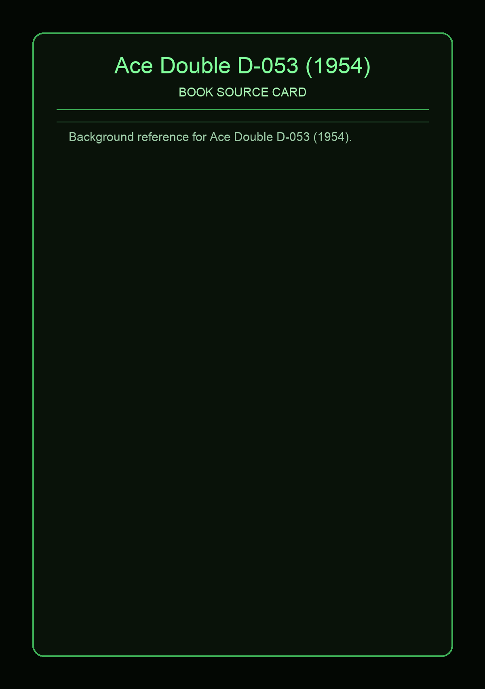

Ace Double D-053 (1954)
Source Card

A-side: Gateway to Elsewhere (Murray Leinster). B-side: The Weapon Shops of Isher (A. E. van Vogt). This Ace code uses the dos-a-dos format, so each narrative gets its own front-cover orientation in one physical paperback [1][2].
D-053 combines cross-dimensional adventure with political SF. Gateway to Elsewhere uses Tony Gregg and a "Barkut" coin as the trigger into an alternate-world quest structure with a rescue arc [4].
Covers and Context


On the flip side, The Weapon Shops of Isher is anchored in Isher civilization: Robert Hedrock, Empress Innelda Isher, and the counter-power of the Weapon Shops. That balance-of-power framing is central to why this code is still referenced in classic SF bibliographies [1][3].
External Links
Facts are synthesized in original wording from direct references listed above.